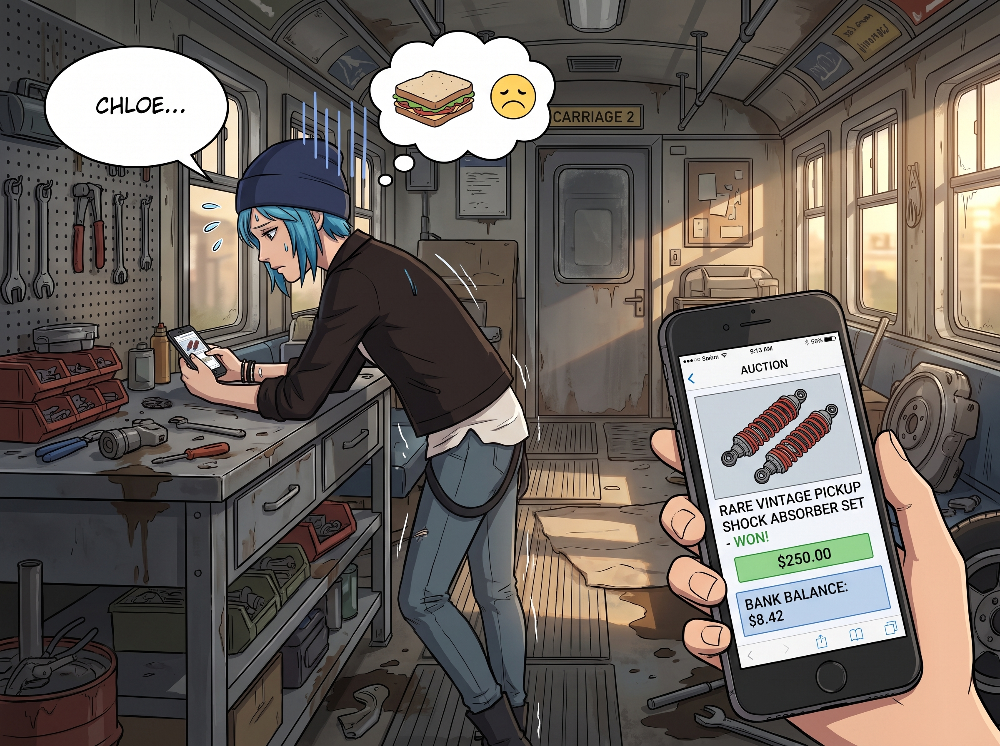
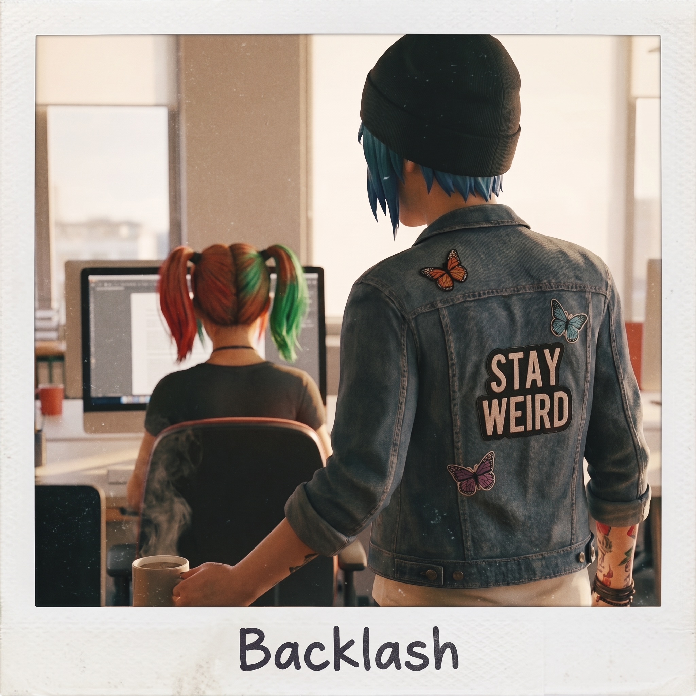

反噬（倒敘）


十二月的一個週五下午，二號車廂的財務危機再次降臨到了 Chloe Price 的頭上。
因為在網拍上衝動競標了一套絕版的皮卡避震器，這位藍領技師的銀行帳戶餘額正式宣告跌破兩位數。飢腸轆轆的 Chloe 靠在工作台上，看著正在專心核對底片庫存的實習生 Lily，腦海裡突然閃過一個邪惡的生財之道。
這隻小白兔現在可是拿著 Victoria 開出的高薪，而且她那身足以在波特蘭街頭橫著走的黑魔法，全是自己教的。收點學費不過分吧？
一、藍領猛獸的知識付費勒索
Chloe 叼著一根沒點燃的菸，雙手插在破洞牛仔褲的口袋裡，邁著六親不認的步伐晃到了 Lily 桌前。
「咳咳，小傢伙。」Chloe 壓低聲音，擺出一副黑幫教父的派頭，「俗話說得好，天下沒有白學的絕地武士技能。妳上週用我教妳的橈神經打擊術和髮夾開鎖法在畫廊大出風頭，甚至還因此加了薪。作為妳的啟蒙導師，妳是不是該表示點什麼？」
Lily 停下筆，抬起頭，厚重的圓框眼鏡後閃過一絲不易察覺的光芒。
「Price 學姐的意思是？」Lily 語氣乖巧地問道。
「也不多要，」Chloe 咧嘴一笑，圖窮匕見，「市中心那家地獄火手工披薩店，一個雙層墨西哥辣椒義大利臘腸披薩，外加半打冰鎮櫻桃可樂。這筆黑魔法知識產權使用費，很合理吧？」
二、實習生的企業級反殺
「非常合理，Price 學姐。」
Lily 點了點頭，臉上綻放出一個毫無破綻的甜美微笑。她甚至沒有猶豫，直接拉開抽屜，拿出了那本黑色的《工坊生存與階級防禦指南》，翻到了最新的一頁。
「知識確實需要付費，這非常符合資本市場的運作邏輯。」Lily 拿起筆，語氣溫柔地說，「不過，既然我們現在要進行商業結算，為了符合 Chase 財團的財務規範，我們需要進行一下雙向的帳目對沖。」
「哈？對沖什麼？」Chloe 愣了一下。
「是這樣的，」Lily 微微一笑，念起了筆記本上的條目，「本週二下午三點，您在試圖將皮卡倒進車庫時，不小心剮蹭了 Victoria 學姐那輛保時捷的左側保險桿。是我用了兩個小時，用拋光蠟幫您完美掩蓋了罪證。按照市面上的頂級鈑金修復人工費，這筆封口與修復諮詢費大約是 300 美金。」
Chloe 的額頭瞬間冒出了一滴冷汗。
「還有，」Lily 繼續溫柔地補刀，「本週四上午，您在客廳玩滑板，打碎了 Kate 學姐最喜歡的那個用來裝洋甘菊的陶瓷罐。是我迅速去市中心買了一個一模一樣的二手罐子替換，並偽造了植物的泥土分佈。這筆危機公關處理費，算您 150 美金就好。」
「等等！妳是怎麼知道那個罐子……」Chloe 的聲音開始發抖。
「這不重要，學姐。」Lily 合上筆記本，雙手交握在胸前，發動了 Victoria 傳授的究極奧義——降維打擊式憐憫。
她微微揚起下巴，看著 Chloe 那雙沾著機油的馬汀靴，輕輕嘆了口氣：「所以，扣除掉您的披薩和可樂錢，您目前還欠我大約 415 美金。不過我完全理解，畢竟對於一個沉迷於改裝破銅爛鐵、財務狀況永遠處於赤字邊緣的藍領技師來說，一次性支付這筆巨款確實很困難……」
三、致命一擊：天使的道德綁架
看著 Chloe 被 Victoria 同款階級嘲諷噎得說不出話，Lily 決定再疊加一層致命的魔法。
她的眼眶瞬間變紅，語氣變得像 Kate 一樣哀傷且令人充滿罪惡感：「當然，如果您真的非常想吃那個披薩，我可以把下週的午餐錢省下來請您。雖然我可能會因為低血糖而暈倒在畫廊裡，Kate 學姐看到我蒼白的臉色一定會非常心疼，然後嚴厲地追問我錢都花到哪裡去了……」
「停！！」
Chloe 聽到「Kate 學姐會嚴厲地追問」這幾個字，嚇得差點跳起來。她太清楚了，如果讓小天使知道她不僅勒索實習生，還打碎了洋甘菊罐子，她接下來一個月的晚餐都將是無鹽水煮綠花椰菜。
「我不要披薩了！可樂也不要了！」Chloe 雙手投降，冷汗直流，「那些帳我們一筆勾銷！妳什麼都沒看見，什麼都沒幫我修，好嗎？！」
「這怎麼好意思呢，Price 學姐。」Lily 瞬間收起了眼淚，重新露出乖巧的笑容，「知識是無價的。」
「不！知識是免費的！開源的！開源萬歲！」Chloe 欲哭無淚地往後退。
四、歷史性的奴役
「既然您這麼堅持開源精神，」Lily 順水推舟，將桌上一個空了的馬克杯輕輕推到桌邊，語氣溫柔得令人無法拒絕，「那我能麻煩偉大又慷慨的 Price 導師，去幫我泡一杯熱可可嗎？記得加兩塊棉花糖，溫度控制在 75 度哦。不然我可能會不小心把那個陶瓷罐的秘密說漏嘴呢。」
兩分鐘後，二號車廂的廚房裡傳來了微波爐「叮」的聲音。
曾經不可一世的阿卡迪亞灣惡霸、藍領猛獸 Chloe Price，正垂頭喪氣地端著一杯熱可可，像個盡職的小弟一樣，恭恭敬敬地放到了實習生的桌子上。
坐在起居廂沙發上的 Victoria 看到這一幕，滿意地合上了手裡的雜誌，嘴角勾起一抹極度驕傲的冷笑：「完美的談判。這丫頭已經青出於藍了。Caulfield，妳的這隻狒狒根本不是她的對手。」
Max 舉起相機，將 Chloe 憋屈地端著杯子的背影拍了下來。
「這張照片我要命名為《反噬》。」Max 絕望又好笑地搖了搖頭，「我們真的創造了一個怪物，Victoria。而最可怕的是，這個怪物表面上看起來還是個會說請和謝謝的天使。」
故事的時間點，實際發生在第二季波特蘭工坊時期